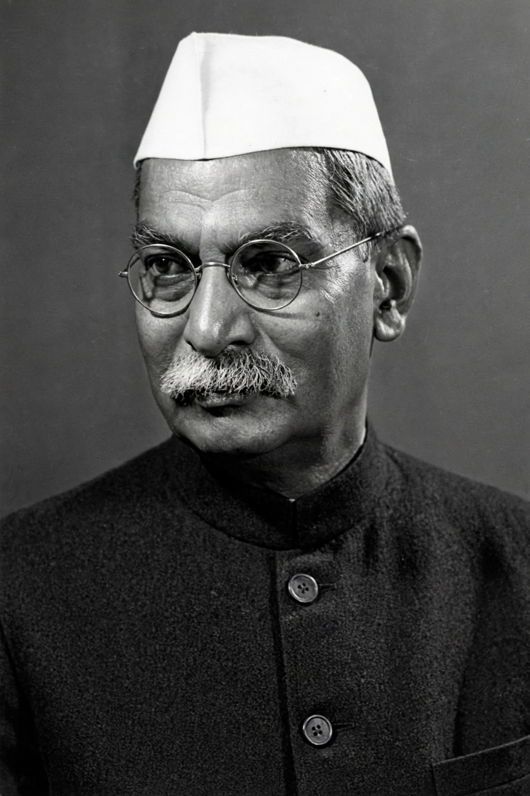

Rajendra Prasad (3 December 1884 – 28 February 1963) was an Indian independence activist, lawyer and statesman who served as the first President of India from 1950 to 1962 — the longest-serving president — and as president of the Constituent Assembly that drafted India's constitution.

| Born | 3 December 1884, Ziradei, Bihar |
|---|---|
| Died | 28 February 1963, Patna |
| Office | 1st President of India 1950–1962 |
| Award | Bharat Ratna (1962) |
A brilliant student at Presidency College, Calcutta, Prasad joined the Indian National Congress, worked closely with Mahatma Gandhi in the Champaran Satyagraha (1917), Non-Cooperation and Salt Satyagraha movements, and was imprisoned several times, including after the Quit India movement (1942–45).
Elected president of the Constituent Assembly in 1946, he became President of the Republic on 26 January 1950 and was re-elected in 1952 and 1957. He set conventions for a non-partisan head of state.